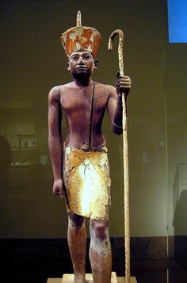

Polymathy and Open Source
Dr Carey Pridgeon
Created: 2021-09-08 Wed 10:31
Polymathy and Open Source
Exploration of the Term
- Polymath
- A polymath is an individual whose knowledge spans a significant number of subjects, known to draw on complex bodies of knowledge to solve specific problems.
Some examples of Past Polymaths
- Imhotep (~27th century BC)

- Starting life as a member of the peasant class, Imhotep was so talented he quickly rose through the ranks of Egyptian society to become the Egyptian chancellor to the pharaoh Djoser.
- One of his greatest acheivements was beginning the period of stone pyramid building, which he began by designing the first pyramid, Djoser's Step Pyramid
- He was also the father of medicine, though originally western scholars largely dismissed the Greeks own assertion that they learned so much from Egypt. Thus while Hypocrites himself wrote that he owed much of his knowledge to Imhotep, this was ignored by later western scholers.
- After his death Imhotep came to be worshipped as a god in egypt, and was believed for thousands of years to be responsible for the flow of the Nile river, science, medicine and wisdom. The only non king to have this occur.
- While so little is known in concrete terms of his personal life a lot can be inferred from his achievements.
- He was a superb mathematician and architect, able not only to duplicate existing designs but create completely original ones which had never been considered before.
- As Chancellor he would have advised the Pharaoh, which means he would have needed to be able to grasp the political, religious, and economic state of the entire nation.
- Ibn Sina (980 - 1037)
- He was one of the most significant Physicians and Astronomers of the early Islamic period, writing books on medicine which continued to be used for centuries.
- He also wrote books on: Alchemy, Geography and Geology, Psychology, Islamic theology, Logic, Mathematics, Physics and Poetry.
- Ibn Rushd (1126—1198)
- A Muslim Andalusian polymath and jurist who wrote over a hundred books, covering such varied subjects as philosophy, theology, medicine, astronomy, physics, psychology, mathematics, Islamic jurisprudence and law, and linguistics.
- He also attempted to reconcile Aristotelian philosophy with the Muslim world, replacing Aristotles examples with ones contemporary readers could more easily grasp.
- Ibn Khaldun (1332 - 1406)

- Considered by many to be father of the modern disciplines of historiography, sociology and economics, Ibn Khaldun wrote the Muqaddimah, what may be one of the most analysed and influential pieces of Muslim sociological literature ever written.
- He has been proposed as being the originator of the scientific method, although I know too little on this subject to comment on whether this would be correct.
- Maya Angelou (1928-2014)
- Born into a family still living under the effects of an incomplete emancipation process and suffering the frequent brutalities resulting from this, Maya had a difficult early life, which led her into involvement with the civil rights movement, and also into becoming a dancer, actor, poet and writer.
- She did too much to list here, but throughout her life she remained active in politics and the civil rights movement, being awarded more than fifty honorary degrees and serving on two presidential committees.
- Too often now the term Polymath is used to describe someone who has become rich and hugely succesful. Mark Zuckerberg, for example is not a Polymath, though he has been called one.
- He's well educated, but this education was gained through his family being wealthy. He may be a famous dropout, but he is because he had no need of the degree certificate.
- Had he not achieved his level of wealth and business success, which is mostly by employing other people, he wouldn't even be considered.
- This isn't how Polymathy works, that's how business works.
- Being a Polymath doesn't mean you will become rich anyway, it means you will be more likely to end up doing something you enjoy, or enriching the lives of others.
- This is vastly more important. Go watch a few speeches by Jim Carrey if you don't want to take my word for it.
- Can you become a Polymath? The simple answer to this is yes, but it, like anything else worth doing, takes work.
- Can you become another Imhotep or Ibn Khaldun? That's a different matter, but you don't need to reach those heights to have a more satisfying career.
- As stated at the beginning of this lecture, it literally means learning a number of different subjects (and being able to apply them).
- These can be aspects of computer science when you start out, there certainly are a lot of aspects to pick up, and right now you know a few, but true polymathy involves diverse fields, not just the ones you study at University or in any formal setting.
- In essence it means embracing a life where you'll never stop seeking new experiences or things to learn, or ways to apply those things.
- Also, Computing is a massive field, and we, as a field, are still at the start of learning all the areas it can be applied to.
- For example, pre 2000's, no-one really thought there would be any money to be made in social media.
- Now it's a business worth billions, but no single person invented it. the idea evolved over decades, until people started creating online services whose main purpose was to collect data with the side benefit of allowing their service users to communicate more easily.
- However this has always been a side benefit, were it not these services would not be free.
- Supermarkets don't give away food to get you to use their cards, but they do give rewards, because the data they collect is worth millions to them.
- Back to the subject at hand, studying beyond your field is generally a good idea. This is when ideas collide.
- This usually gets easier once you've been working for a while, but to start with it's a good idea to get into the habit of reading a wide range of non fiction, and having a hobby or hobbies with unrelated to your main occupation.
- With related work, Open Source work and eventually collaboration provides the best opportunity for widening your knowledge and experience inside your field.
- To start with, just learning different subjects, widening your knowledge base, moving towards polymathy is the best idea.
- Your employer, if you have one, might have courses on offer, so if they do, take all that you can. These will, somewhat obviously, be related to your role
- I'm suggesting studying outside completely beyond your field as well.
- This needn't be on a formal course, since there are thousands of online courses available which are relatively cheap.
- Another cheap alternative is via the increasing number complete courses universities are putting online, enabling you to study all the material, sans support or qualification, for almost entire degree courses.
The Garage Myth and Era of mega successful University Dropouts
- Much is made of dropping out of University and starting out alone with nothing but your own wits and a few resources.
- Like they did in the olden days, when huge business were stated in garages.
- So, how true is this, and can this really be done today?
- Lets examine the somewhat abbreviated reality, by skipping over all but the most famous examples I know of (not including people who sold their companies).
- Bill Gates came from a rich family and was able to obtain large amounts of money to begin his company. In addition he had been superbly educated prior to 'dropping out'.
- Steve Jobs didn't have such a wealthy background, and did drop out, but he did so because he didn't really need the degree certificate.
- Some people simply don't, and he'd obtained what he needed from Reed College by the time he left. While not a computer Scientist in the classical sense, he was a smart businessman, but still not a Polymath.
- Polymaths also tend to be Autodidacts for the most part. Maya Angelou was for instance. An Autodidact teaches themselves and is sometimes actively held back by conventional education.
- Dropout now with the industry so focussed on degree qualifications, (including Apple,Google, Microsoft and Facebook) and you'd possibly be unemployable, at least in Computing, but this was a long time ago, and Jobs founded Apple with Steve Wozniak with, as many overlook a lot of investment capital while still in his garage, after only a short period of working without funding.
- Google may have been based initially in a garage, but Larry Page and Sergey Brin, its founders were both graduates of Stanford University. This is one of the most expensive universities in America to enter, and getting there requires an equally expensive prior education.
- In short neither Google founder were from poor backgrounds, they both had a serious advantage to begin with, and again lots of investment funding.
- All of these examples were people who had well rounded educations. Not Polymaths, but decently educated to the point of being able to use the money they had well.
- They were great examples of good people who were good at Business, but since they mostly had a huge financial advantage, went looking for another label and chose Polymath instead.
- A true Polymath can succeed without much money. They are taken on and given positions of power because they are polymaths, not the other way round.
- Does this mean it's impossible to reach such heights in the world of computing without having such a prior advantage?
- It means it's more difficult, certainly, but this is the case in every field. However technology is changing. No one person or corporation can predict what will be the next big thing.
- This means the floor is open for someone to really experiment, bring together existing technologies in different ways and discover something new.
From Prince of Persia to Movie Motion Capture
- Created in 1989 by Jordan Mechner, this game, produced by one boy with the assistance of his brother it would be fair to say changed the way games and movies were made forever.
- It would also be fair to say it did so only because Jordan wanted smoother animations in his game, not because he set out deliberately to change the industry.
- He filmed his brother performing all of the movement scenes in his games (fighting/jumping, climbing), then transcribed them into his game.
- Mechner had skills beyond programming in order to achieve this. Design, planning, film-making, drawing (painting?).
- The game franchise he created is famous, he's succesful, but as he hasn't achieved the 'American Standard For Success (TM)' level of wealth, therefore no-one calls him a polymath, although he certainly is.
- His early work has now evolved into the motion capture technology we are familiar with today, and he is acknowledged as the person who began it.
- I can't reproduce a chronology for it, but now rather than drawing over live actors, reference points are sometimes (but not always) placed on the actors bodies to be used by CGI modellers later.
- Cats (2019) is the rare exception to this, and it went so badly the experiment is unlikely to repeated until technology appears that makes physical tags irrelevent.
Relating all this to Open Source
- Modern workplaces tend to channel you into specialising on whatever is they happen to be paying you for.
- They may feel justified for this, after all, it's their money, and you have agreed to work for them.
- But long term, thinking like this hurts your prospects. Learning one thing in depth for a company will do you no good if you then leave that company and this skill isn't required elsewhere.
- There have been three major economic crashes in the last two decades. Specialisation can be a risky strategy in such a financially unsteady job market
- Keeping an Open Source portfolio active, either by having your own projects, or by participating in a variety of different types ones run by other people or groups (for preference ones outside of your 'comfort zone'), you can keep expanding your knowledge.
Obligatory XKCD
- Copyright: Randall Munroe
- Mirrored to avoid bandwidth stealing
Licence for this work
- Licenced under Creative Commons Attribution-ShareAlike 4.0 International by Dr Carey Pridgeon 2020
- (Licence does not cover linked images owned by other content creators)